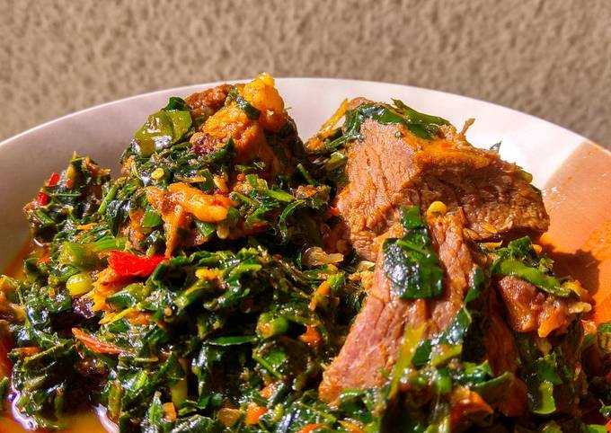

VEGETABLE SOUP

Description
Vegetable soup is a common soup prepared using vegetables and leaf
vegetables as primary ingredients. It dates to ancient history, and is a
mass-produced food product in contemporary times.
Ingredients
- Big bowl Waterleaves
- Big bowl ugu leaves (fluted pumpkin)
- Roasted mackerel
- 1KG or 35 Ounces of Goat meat
- 1 cup crayfish
- 6 scotch bonnet peppers
- 400ml Palm oil
- 2 seasoning cubes
- Salt to taste
- 2 tablespoons Ground Ofor
Steps
-
Slice the water leaves and fluted pumpkin leaves with a kitchen knife,
you want them thinly sliced as you can see below.
-
Wash the roasted fish, remove center bone and break to smaller bits.
-
Season the goat meat with a teaspoon of salt, sliced onions and two
seasoning cubes. Allow the meat to boil, add two cups of water and let
the meat cook until it becomes tender and easy to chew.
-
To the boiling meat, add the washed, roasted fish. Allow them to cook
until the water dries. Don’t allow it to burn.Most people don’t like too
much water in their vegetable soup, to achieve that, use some tricks –
like boiling the meat/fish till the water is almost dried.
-
When the meat cooked and the water is almost completely dried, add the
palm oil, 400ml. You need lots of palm oil when you cook vegetable soup.
-
Now you add the vegetables, the water leaves should come first. It
should fill the pot, it will go down in 3 minutes as you continue to
stir.
- Add the pounded crayfish and peppers.
-
Add the ugu leaves (fluted pumpkin) at this point. Stir2 tablespoons of
ofor (used as a thickener). Turn properly so it doesn’t form crumbs.